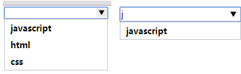
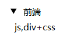

新增语义话标签 <header>头部 <footer>页脚 nav导航 hgroup 标题组合 section 用来划分区域主体和对主体的描述 article aside figure媒体元素 time：时间标签mark:文字强调
<header>用在页面的头部或者版块的头部</header> header头部
<footer>用在页面的头部或者版块的底部</footer> footer页脚
<nav><a href="#">链接</a><a href="#">链接</a></nav>nav导航
<nav>
<p><a href="#">链接</a></p>
<p><a href="#">链接</a></p>
</nav>
<nav>
<h2>Logo</h2>
<ul>
<li><a href="#">javascript</a></li>
<li><a href="#">html+css</a></li>
</ul>
</nav>
<hgroup> hgroup 标题组合
<h1>标题</h1>
<h2>标题2</h2>
</hgroup>
<section>用来划分区域</section>section 用来划分区域
<article>主体</article> 主体和对主体的描述
<aside>和主体相关的附属信息</aside>
<figure> 媒体元素，多用于，盒子，图片，对图片的描述
<img />
<figcaption> photo ©味 </figcaption>
</figure>
<p> 我们在每天早上 <time>9:00</time> 开始营业。 </p> time：时间标签
<p> 我在 <time datetime="2008-02-14">情人节</time> 有个约会。</p>
<address>地址信息</address> address:地址信息
<mark>标记</mark> mark:提示（加重）文字标记
功能性标签 datalist消息过滤,收索过滤datalist下面 option里面的value值 注意:input里面的list对应的value一定要和dateList里面的Id关联
<input type="text" list="valList" /> input里面的list对应的value一定要和dateList里面的Id关联
<datalist id="valList"> datalist:消息过滤,收索过滤 option里面的value值
<option value="javascript">javascript</option >
<option value="html">html</option>
<option value="css">css</option>
</datalist>

details 点击小三角的下拉列表 details里面有个open默认值，给了就会自己默认展开
<details>
<summary>前端</summary>
<p>js,div+css</p>
</details>

progress 进度条 max:最大(总份数) value(当前占总的多少份儿)
<progress max="200" value="100"></progress>
dialog 对话
<dialog open>
<dt>老师</dt>
<dd>2+2 等于？</dd>
<dt>学生</dt>
<dd>4</dd>
<dt>老师</dt>
<dd>答对了！</dd>
</dialog>
表单控件 input里面新增的type值
<input type="range" step="2" min="0" max="10" value="2" /> step:拖动的频率(1次拖动多少),min:最小值,max:最大值,value:默认拖拉杆在的位置
<input type="color" /> 选色板控件
type ="email" 电子邮箱文本框，跟普通的没什么区别当输入不是邮箱的时候，验证通不过移动端的键盘会有变化
type ="tel"电话号码
type ="url"网页的URL
type ="search"搜索引擎 chrome下输入文字后，会多出一个关闭的X 移动端键盘上会有收索按钮
type ="number"只能包含数字的输入框
type ="datetime"显示完整日期，不含时区
type ="time"显示时间，不含时区
type ="date"显示日期
type ="week"显示周
type ="month"显示月
input新增的属性 placeholder：提示 required:非空 autofocus：获得焦点pattern:行间正则验证 autocomplete:是否保持用户输入的信息 formaction：可以单独指定一个链接提交跳转
<form action="http://www.baidu.com">
<input type="text" placeholder="请输入4-16个字符" name="user" required="required" autofocus="autofocus" autocomplete="off" pattern="\d{1,5}" />
<input type="submit" value="提交" />
<input type="submit" value="保存至草稿箱" formaction="http://www.qq.com" />
</form>
H5新增选择API querySelector：选择单个节点(单个id或者class) querySelectorAll：支持css3选择器,选择一组节点(获取多个class需要for循环便利) getElementsByClassName：单纯选择class
window.onload = function(){
//获得id的新方式(只能获得1个标签节点 ID和单个class)
var aDiv = document.querySelector('#ul');
//可以根据这个获得多个class以及其他节点支持css3选择器（需要便利）
var aDiv = document.querySelectorAll('#ul li[att=sss]');
for (var i = 0; i < aDiv.length; i++) {
aDiv[i].style.background = 'red';
}
//只能获取class
var oBox = document.getElementsByClassName("box");
alert(oBox.length);
}
获取class列表。add,remove,toggle对象.classList:获取class列表。 add:添加calss remove：删除class toggle：切换Class的方法
window.onload = function(){
var oBox = document.querySelector("#box1");
console.log(oBox.classList);//返回的是1个类似于数组的对象 //box1 box2 box3
// alert(oBox.classList.length) //length属性
//添加Class的方法
// oBox.classList.add("box4");
//删除Class的方法
// oBox.classList.remove("box1");
//切换class方法
oBox.classList.toggle("box5");
}
Json的新方法 eval和parse(必须是严格模式json)的对比:作用都是字符串变json JSON.stringify(value):json变字符串 利用stringify和parse深层次的复制对象引用
//eval : 可以解析任何字符串变成JS
//parse : 只能解析JSON形式的字符串变成JS (安全性要高一些)
window.onload = function(){
// var str = 'function aa(){alert("123")}';
// eval(str);
// //eval--->吧字符串变成js执行
// aa();//123
//字符串变json，必须是严格模式json
// var Json ='{"name":"彭进"}';
// var str = JSON.parse(Json);
// alert(str.name);
//json变字符串
var Json ={"name":"彭进"};
var str = JSON.stringify(Json);
//处理 stringify parse的低版本兼容 //下载json2.js实现兼容
}
对象引用js和利用stringify和parse深层次的复制对象引用对比
/*var a = {
name : 'hello'
};
var b = {};
for(var attr in a){
b[attr] = a[attr];
}
b.name = 'hi';
alert( a.name );*/ //视频 : 对象的引用
//利用stringify和parse
var a = {
name : { age : 100 }
};
var str = JSON.stringify(a);
var b = JSON.parse(str);
b.name.age = 200;
alert( a.name.age );
data-xx 自定义属性 jquerymobile里面的data-xx就是采用这种形式 dataset获取自定义属性的方法
window.onload = function(){
//数据分离的配置
var oDiv = document.getElementById("div");
//只有一截的情况 data-msg = "2"
alert(oDiv.dataset.msg);//2
//两截和多截的情况，请利用驼峰写
alert(oDiv.dataset.msgAll);//全部
}
JS延迟加载 defer:延迟到onload之前加载 async：异步加载，加载完就触发，有顺序问题
延迟加载JS
JS的加载会影响后面的内容加载
很多浏览器都采用了并行加载JS，但还是会影响其他内容
Html5的defer和async
defer : 延迟加载，会按顺序执行，在onload执行前被触发
async : 异步加载，加载完就触发，有顺序问题
Labjs库
历史管理 onhashchange:改变哈希值的时候触发的事件 history:必须在服务器下 history.pushState : 三个参数 ：数据 标题(都没实现) 地址(可选)
wimdow.popstate事件 : 读取数据 event.state
//触发历史管理:1.通过跳转页面 2.修改哈希值,3.history.pushState
window.onload = function(){
//定义1个json -》哈希json
var jsono = {};
$("btn").onclick = function(){
var mun = Math.random();
var arr = RumDom(35,7);
jsono[mun] = arr;
$("div").innerHTML = arr;
//修改浏览器上面的哈希
window.location.hash = mun;
console.log(jsono);
}
//改变哈希值的时候触发的事件
window.onhashchange = function(){
// window.location.hash.substring(1)得到哈希值,切掉首字符#
$("div").innerHTML = jsono[window.location.hash.substring(1)];
}
//a:1-a这么多数字,b多少位随机数
function RumDom(a,b){
var arra = [];
var arrb = [];
for (var i = 1; i < a; i++) {
arra.push(i);
}
for (var i = 0; i < b; i++) {
arrb.push(arra.splice(Math.floor(Math.random()*arra.length) ,1));
}
return arrb;
}
function $(id){
return document.getElementById(id);
}
}
//服务器下的demo
window.onload = function(){
$("btn").onclick = function(){
var arr = RumDom(35,7);
//history.pushState 第一个参数是存取的数组,第二个可为空,第三个默认为空就是地址栏不发生改变 ,如果改变可以传第三个参数
history.pushState(arr,'');
$("div").innerHTML = arr;
}
window.onpopstate = function(ev){
$("div").innerHTML = ev.state;
}
function RumDom(a,b){
var arra = [];
var arrb = [];
for (var i = 1; i < a; i++) {
arra.push(i);
}
for (var i = 0; i < b; i++) {
arrb.push(arra.splice(Math.floor(Math.random()*arra.length) ,1));
}
return arrb;
}
function $(id){
return document.getElementById(id);
}
}
H5拖放事件对象拖拽之前触发ondragstart ondragover:拖动之前和之后之间触发 ondragend：对象结束之后触发 目标元素：dragenter有目标进入时触发 目标出去触发:dragleave drop释放鼠标
window.onload = function(){
var oLi = document.querySelectorAll("ul li");
for (var i = 0; i < oLi.length;i++) {
//对象拖拽之前触发ondragstart
oLi[i].ondragstart = function(){
this.style.background = '#000';
}
//在之前和结束之间触发 -->进入目标、离开目标之间，连续触发
// oLi[i].ondragover = function(){
// this.style.background = '#ccc';
// }
//对象拖拽结束和触发
oLi[i].ondragend = function(){
this.style.background = 'orange';
}
}
//目标元素事件
var oDiv = document.getElementById("box");
//目标元素进入的时候
oDiv.ondragenter = function(){
this.style.backgroundColor = '#000';
}
//进入目标、离开目标之间，连续触发
oDiv.ondragover = function(ev){
//enter和leave之间连续触发
//要想触发drop事件，就 必须在dragover当中阻止默认事件
//document.title = i++;
ev.preventDefault();
};
//离开目标元素的时候触发
oDiv.ondragleave = function(){
this.style.backgroundColor = 'red';
}
//当拖动目标元素上释放鼠标时候触发
oDiv.ondrop = function(){
alert("1");
}
}
ev.dataTransfer对象详解以及兼容FF的拖动 声明了ev.dataTransfer.setData就可以让FF可以拖动了 ev.dataTransfer.setDragImage(oImg,0,0);拖动对象,鼠标在x,y轴的位置
aLi[i].ondragstart = function(ev){
var ev = ev || window.event;
//这里指定setDate的index=i
//只要这里声明了ev.dataTransfer.setData就可以让FF可以拖动了
ev.dataTransfer.setData('name',this.index);
//修改鼠标拖动的样式
ev.dataTransfer.effectAllowed = 'link';
//鼠标拖动的时候你需要拖动的对象(可以是图片，节点啥的，0,0，是指拖动时候鼠标在的x,y的位置)
ev.dataTransfer.setDragImage(oImg,0,0);
this.style.background = 'green';
};
拖动文件上传预览 FileReader 对象.readAsDataURL()里面的参数必须是 ev.dataTransfer.files里面的对象 对象.result,得到对象上传的地址
window.onload = function(){
var oDiv = $("fileDiv");
var oUl = $("ul");
oDiv.ondragenter = function(){
this.innerHTML = "可以拖释放了";
}
oDiv.ondragover = function(ev){
ev.preventDefault();
}
oDiv.ondragleave = function(){
this.innerHTML = "将文件拖拽到此区域";
}
oDiv.ondrop = function(ev){
ev.preventDefault();
var files = ev.dataTransfer.files;
for (var i = 0; i < files.length; i++) {
//如果类型是image的话
if (files[i].type.indexOf("image") != -1) {
//得到文件之前要new一个fileReader对象
var fd = new FileReader();
//fd.readAsDataURL()里面的参数必须是 ev.dataTransfer.files里面的对象
fd.readAsDataURL( files[i] )
fd.onload = function(){
//fd.result 得到上传图片的banse64地址
console.log(fd.result);
//创建1个li
var oLi = document.createElement("li");
var oImg = document.createElement("img");
oImg.src = this.result;
oLi.appendChild(oImg);
oUl.appendChild(oLi);
}
this.innerHTML = "将文件拖拽到此区域";
}else
{
alert("请输入正确的图片类型")
}
}
}
}
function $(id){
return document.getElementById(id)
}